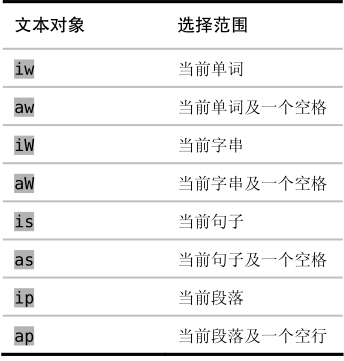
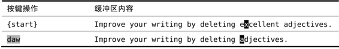
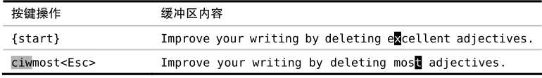

技巧52删除周边，修改内部
文本对象通常是成对出现的，一个用于操作对象内部的文本，而另一个则操作对象周围的文本。在本节中，我们将剖析每类文本对象的典型用法。
Vim 的文本对象分为两类：一类是操作分隔符的文本对象，如i)、i"和it；另一类用于操作文本块，如单词、句子和段落。
表8-2对后一类的文本对象进行了总结：
表8-2范围文本对象

我把第一类标注为“分隔符文本对象”，因为它们以配对的符号作为开始和结束。单词、句子以及段落则以文本结构的范围进行界定，因此我把这一类称为“范围文本对象”。Vim 的文档把它们称为“块对象”（block object）和“非块对象”(non-block object)，但我发现这种区分方式无助于理解。
让我们比较一下iw及aw文本对象。按之前说过的记忆方式，可以分别把它们解读为操作单词内部（inside the word）或单词周围（around the word）。不过这究竟代表着什么呢？
iw文本对象包含当前单词从第一个到最后一个字符间的全部内容，aw文本对象也是一样，但它的范围有所扩大，它会额外包含该单词前面或后面的一个空白字符（假如该处有空白字符的话）。想知道 Vim 如何界定单词的边界，请参阅技巧48。
iw和aw之间的区别很微妙，为什么会需要这样两个文本对象呢？乍一看不是很明了。因此，让我们先看一下二者的典型应用。
假设，我们想删除下句中的单词“excellent”，此时可以用daw命令：

这条命令会删除此单词，外加一个空格，因此结果会很干净。如果我们用的是diw的话，那删完后就会有两个连在一起的空格，这或许并不是我们想要的。
现在假设我们是想把此单词改成另外一个单词，这次可以用ciw命令：

ciw命令只删除该单词，而不删除其前后的空白字符，随后它会进入插入模式，这刚好是我们想要的效果。如果用的是caw的话，那最后两个单词就会连在一起，变成“mostadjectives”。虽然这很容易修正，但如果一开始就能避免此问题，那岂不是更好么。
一般来说，d{motion}命令和aw、as和ap 配合起来使用比较好，而c{motion}命令和iw及类似的文本对象一起用效果会更好。